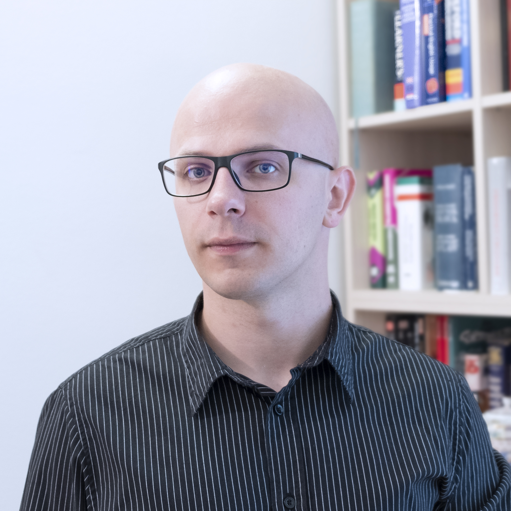

Mario Lovrić
Head of Computational Life Science
Education
PhD in Cheminformatics
2015 - 2021
M.Sc. in Applied Chemistry
2010 - 2012
Languages
- Croatian (Native)
- German (Native)
- English (C1)
- French (A1)
Awards and Grants
French government fellowship
2019
French government fellowship
2016